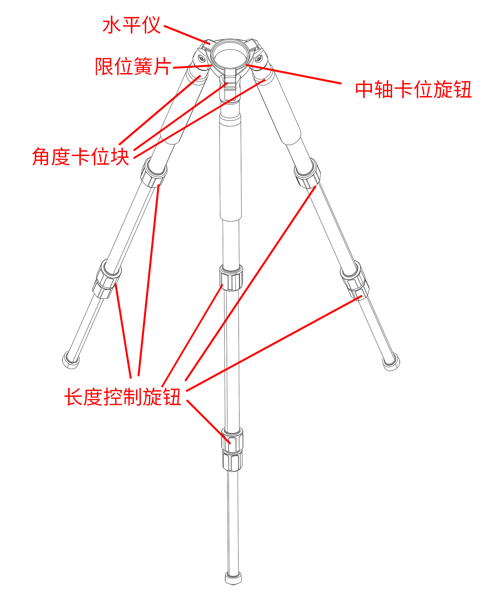

产品安装
安装注意事项
操作须知
-
操作前请熟悉仪器的构造、性能以及各项操作注意事项。操作过程中，请保持手部动作柔稳，请尽量选择地势平坦的区域进行设备安装。
-
仪器开箱前，请将仪器箱平放于地面，严禁上下颠倒仪器箱，以免仪器在开箱时落地损坏。开箱后应查看仪器在箱内放置的状态，使用完毕后按原样入箱。
-
操作中应避免用手触及镜头和激光测距仪，有灰尘或污渍时请使用气吹、软毛刷、擦拭纸处理。严禁使用手指、衣物、手帕、纸巾和其他硬质物品或腐蚀性化学物品等擦拭。
-
当仪器旋转失灵或转动过程有杂音时，应立即暂停操作并查明原因妥善处置。请勿强力扳扭或拆卸、锤击仪器。
-
仪器及所用部件取出后，应及时合上仪器箱，以免沙土杂草进入箱内。严禁坐、踏仪器箱。
电脑配置要求
与 VDA 适配的笔记本电脑/工控机推荐配置如下。
| 笔记本电脑 | 工控机 | |
|---|---|---|
| 处理器 | 英特尔 酷睿 i7 | 英特尔 酷睿 i9 |
| 内存 | 32G | 32G |
| 硬盘 | 1T 固态硬盘 | 2T 固态硬盘 |
| 操作系统 | Win 10 | Win 10 |
| 数据接口 | 2 个 USB3.0 接口 | 2 个万兆网口，1 个 PCIe 接口（采集卡） |
拆箱
打开 VDA 设备手提箱，内有图像采集模块、镜头与线缆。三脚架与云台另附于收纳袋中。
| 部件 | 图示 | 结构说明 |
|---|---|---|
| 图像采集模块 | 3D 版本： 2D 版本：  |
图像采集模块分为 3D 与 2D 版本。 3D 版本含 2 个鹰眼盒，固定在铝合金平台上。铝合金平台两端有旋钮，可调节鹰眼盒水平角度。鹰眼盒内置有相机，可安装镜头。 2D 版本为 1 个鹰眼盒，鹰眼盒内置有激光测距仪与相机，可安装镜头，激光方向调节按钮位于鹰眼盒背面。 图像采集模块通过底部卡口与云台连接。 |
| 镜头 |  |
用于采集视频，提供图像数据。使用时安装在鹰眼盒的相机内。 |
| 二自由度云台 |  |
用于调节图像采集模块左右、上下方向角度。云台设置两个旋钮，上方旋钮调节云台俯仰角，下方旋钮调节云台水平角度。 云台通过顶端卡口与图像采集模块连接。 |
| 三脚架 |  | VDA 测量仪的基座。脚管中段设置长度控制旋钮，顶部设置角度卡位块，可分别调节每条脚管的长度与伸展角度。 三脚架顶端的三角座上配有中轴卡位旋钮、限位簧片与水平仪，卡位旋钮与限位簧片用于固定云台，水平仪用于检查安装平面是否水平。 |
注意
3D 版本图像采集模块的平台固定在铝合金平台上，请勿擅自拆卸。
注意
本公司标配一组或多组不同焦距的镜头，可根据测量需求选配，参数选型表请查看 产品参数。若擅自使用其他镜头或相机，可能影响测量分析的准确度。如需使用其他型号相机或镜头，请联系本公司销售。
安装
VDA 设备安装分为以下 3 步流程：
1) 安装三脚架与云台；2) 安装图像采集模块；3) 连接线缆。
1. 安装三脚架与云台
注意
请在稳定、可靠的地面上进行操作，并确保安装、测量过程中三脚架底部不会滑动。
(1) 从设备箱中取出三脚架。旋松脚管上的长度控制旋钮，将三脚架伸长至所需长度。
(2) 调整三脚架，使其上表面基本水平，将底部的三个长度控制旋钮全部拧紧。
(3) 展开三脚架，将三脚架立于稳定、可靠的地面。
(4) 放置云台。将三脚架顶部的卡位旋钮放松，将限位簧片拉出后放入云台，限位簧片会自动回弹。将卡位旋钮锁死。
提示
为方便后续操作，建议将云台的两个旋钮都朝向操作人员。
2. 安装图像采集模块
注意
如果选购的是分离式设备，请按两个 2D 图像采集模块进行安装。
警告
旋紧螺丝时请勿用力过大，否则可能损坏设备。
注意
请不要直接手提相机，否则可能损坏或弄脏设备。
3D 版本
(1) 打开设备箱，双手分别握住图像采集模块的两端，将其从设备箱中取出。
(2) 将图像采集模块底部的凸起对准云台顶部的凹槽，放入后，拧紧云台顶部的旋钮。
(3) 调整鹰眼盒，避免其松动。将图像采集模块的两个相机盖取下，放回设备箱内。
(4) 从设备箱中取出镜头，将镜头盖取下并放回设备箱内。
(5) 将左镜头对准左相机内螺纹，轻旋并适当拧紧镜头。以同样的方法安装右镜头。
注意
左镜头必须安装于左相机，右镜头必须安装于右相机，否则会影响测量结果。

2D 版本
(1) 打开设备箱，握紧鹰眼盒，将鹰眼盒从设备箱中取出。
(2) 将鹰眼盒底部的凸起对准云台顶部的凹槽，放入后，拧紧云台顶部旋钮。
(3) 将鹰眼盒相机盖取下，放回设备箱内。
(4) 从手提箱中取出镜头，将镜头盖取下并放回设备箱内。
(5) 将镜头对准相机内螺纹，轻旋并适当拧紧镜头。
3. 连接线缆
完成硬件组装之后，方可将 VDA 设备连接至笔记本或工控机。
-
连接笔记本
从设备箱中取出两条 USB3.0-MicroB 线缆。将 USB 端接入笔记本的 USB3.0 接口，将 MicroB 端接入 VDA 设备接口。
-
连接工控机
从设备箱中取出两条相机电源线缆、同步触发盒及万兆网线。将万兆网线的 RJ45 端口接入工控机万兆网接口，带锁定螺丝端接入 VDA 设备；将电源线缆与相机及同步触发盒连接后，接入电源。
设备加固
安装完成后，确认连接螺钉牢固锁定，确认三脚架各螺丝锁紧。之后建议对设备进行加固。
-
若在泥土地面测量，需将户外三脚架底部适当固定，以防仪器下沉。
-
若在斜坡上测量，需将仪器三脚架的两条脚支在坡下，另一条支在坡上。
-
若在光滑地面测量，需用细绳将三脚架的三个脚连接固定，以防三脚架打滑。
-
若在户外，为保证设备的稳定性，还可将仪器安装在浇筑混凝土墩上，或利用不动的稳定点来修正设备自身的偏移。
照明
测量环境采光不足时，应选用亮度适中的弥散光源进行照明，可在 VDA 设备上方安装探照灯。测试前需调整光源位置和角度，避免测试目标区域出现阴影或局部高光。